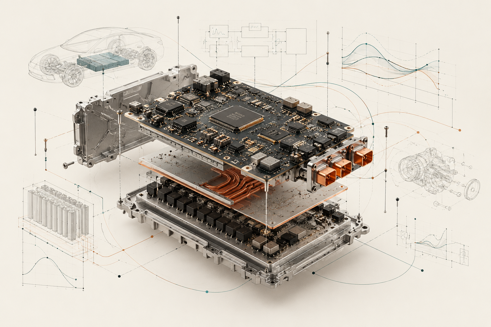

ENGINEERING LAYERSFrom silicon to system
Select a marker to explore the work behind the hardware.
RESEARCH → FIRMWARE → SHIPPED SYSTEMS
Building technology that
leaves the lab.
Real complex products.
Real deployments in millions.
Real field failures.
Real iterations across generations.
From research and algorithms to firmware and shipped systems, I love making things work in the real world.
Explore my work ↗SELECTED WORK
Built, tested, learned.
01PatentsBattery analytics · experiment design · autonomous systems↗
02Battery Energy Storage SystemsBMS firmware · inverter firmware · grid integration↗
03Electric Vehicle Battery ManagementState estimation · diagnostics · production firmware↗
04Special Operations Vehicle All-Wheel-DriveTorque distribution · vehicle dynamics · fault handling↗
05ADAS Automated Lane ChangeNVIDIA · QNX · real-time perception and planning integration↗
06Reinforcement Learning for Safety Critical SystemsPhD · connected and automated vehicle intersection control↗
07Engineering Outside WorkOxford Brookes Formula Student advisor · STEM demonstrations↗